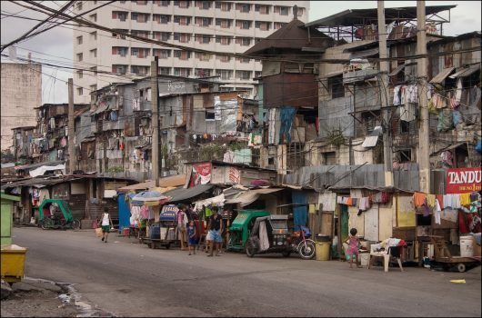

Poverty in the Philippines

Manila
In the Philippines 6.1% of the population live on less than $1.90 per day, 26% live on less than $3.20 per day and 55.1% live on less than $5.50 per day (World Bank Data). Widespread corruption in both Filipino politics and business prevents any opportunities for social mobility and growth. Power is concentrated among influential families and connected individuals, offering the poor truly little chance of bettering themselves.
The Rural Poverty Portal reports that half of the poor in the Philippines live in rural areas. The poorest of the poor are the indigenous, landless laborers, fishermen, small farmers, mountain folk and women. Deforestation, depleted fisheries, and unproductive farmland are major problems for these people.
As a result, there is a never-ending cycle of poverty that leads to parents having to give up their children in hopes they will have a better life somewhere else. There is little doubt that poverty creates a culture for the creation of orphans. Many parents living in poverty are unable to care for their children as they cannot afford food, clothing, shelter, healthcare and education. They are not able to adequately provide for their children, which leaves some to resort to placing their children in orphanages in the hopes that they will have better lives.